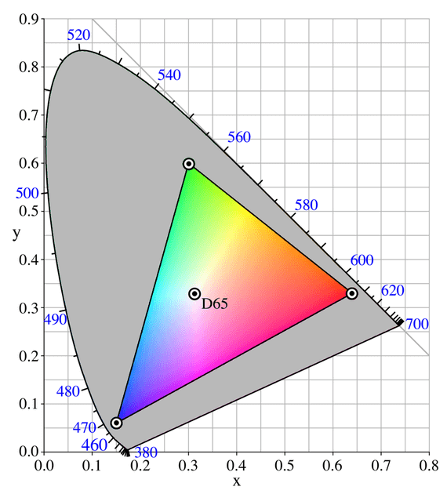

Contents
Introduction To Eye Biology
The human eye contains 2 different types of photoreceptor (photo- meaning light) cells in the retina of our eye. The rod cells, which are used for detecting low levels of light [1], used in night vision as they capture darker colours like grey very well, and the cone cell, which can see better in brighter lighting and have more of a range of light they can interpret [2]. The cone cell will be discussed further as it is used in interpreting and giving us a perception of colour.
Cone Cells
While Cone cells are less sensitive to light, they can perceive colour and allow us to interpret the world around us. They typically come in three different types and these cones each have their own set of photoreceptor proteins (Otherwise known as photopsins [3]).
- S - Cones: Sensitive to small wavelengths of light (peaking at 420 nm (Blue))
- M - Cones: Sensitive to medium wavelengths of light (peaking at 530 nm (Green))
- L - Cones: Sensitive to long wavelengths of light (peaking at 560 nm (Red))
These three types of cone cells give us, humans, trichromatic vision [4] i.e. the ability to perceive colour in the RGB (Red, Green, Blue) colour gradient.
RGB colour model function and history
The modern RGB colour model, used in both science and art all around the world, is an additive colour model ( something that predicts the appearance of colours made by adding up the numbers that represent the colours ) [5] in which the primary colours (Red, Green and Blue) are combined in various different ways. It was quite an ingenious design, as it used the biological knowledge of our eyes coupled with the physics of light and generated something that has been used for 100's of years.
It was first derived in 1860 and is based on the Young–Helmholtz theory of trichromatic color vision, developed by Thomas Young and Hermann von Helmholtz. The first experiment to use the RGB model was in 1861, where Maxwell himself combined three color-filtered photographs.
The modern RGB colours is most popularly represented in the hexadecimal number system (base 16) from 0 - F. For example, in hexadecimal, each color is expressed from 0 (least saturated) to FF (most saturated). So white would be #FFFFFF and pure black would be #000000 with 16 million different colours in between. It can also be represented in the decimal numerical system (base 10), typically as rgb(R, G, B) where each color is expressed from 0 (least saturated) to 255 (most saturated).
While it's easier to use the decimal system, in terms of computer systems, it is actually more convenient to use hexadecimal as you can store more information about colours in a smaller, more compact memory space. This leaves more space for the computer to complete other tasks rather than use vital memory in order to store a simple colour scheme.
How They Fit Together

The set of primary colours generate a colour triangle [7], in which only colors within this triangle can be reproduced by mixing the primary colors. Colours that are not in this triangle are shown as gray as it is not possible to view these with a basic set of three colours. This is demonstrated in photographs and films, as they are never completely accurate in their display. This is one of the flaws in the sRGB which shows us that there are still improvements to be made in colour technology.
We perceive color based on the stimulation levels of our cone cells. For example, if green light entered your eye and stimulated your retina, these wavelengths of light would activate both the M - Cones and L - Cones of the retina, however, the L - Cone will respond more. This difference in response is detected and interpreted by our brain and creates the perception of green. Therefore, the object we are seeing will appear green due to the different degrees of stimulation of the cones on our retinas.
Conclusion
The RGB model is the most compatible model of colour to date as it corresponds with the cell biology of primates incredibly well and lets us perceive up to 16,777,216 different colours (256 3). However, it is not the ultimate solution. There are still colours it can not represent, see Figure 1, and therefore it is likely we will have a better system in the future. Until then, we will continue using this model. Personally, I believe the RGB colour model is quite a clever design but not a flawless design. I look forward to what the next brilliant idea in colour technology will be and will happily use the RGB model in the meantime.
References
[1] Hecht, S.; Shlar, S.; Pirenne, M.H. (1942). “Energy, Quanta, and Vision”. Journal of General
[2] Kandel, E.R.; Schwartz, J.H; Jessell, T. M. (2000). “Principles of Neural Science” (4th ed.). New York: McGraw-Hill. pp. 507–513.
[3] Schacter, Gilbert, Wegner, “Psychology”, New York: Worth Publishers, 2009.
[4] Rowe, Michael H (2002). “Trichromatic color vision in primates”. News in Physiological Sciences. 17 (3): 93–98.
[5] Handprint.com, Written by Bruce MacEvoy, “handprint : colormaking attributes”, published August 1, 2015 [Accessed 01 November 2019]
[6] Sarah Lowengard (2008), "The Creation of Color in Eighteenth-Century Europe", Columbia University Press [Accessed 12 November 2019]
[7] Arun N. Netravali; G. Haskell (1995). Digital Pictures: Representation, Compression, and Standards (second ed.). Springer